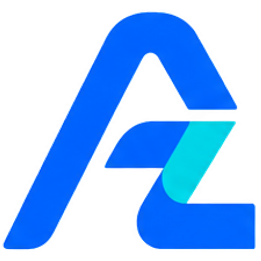

azmindigital
free guide · 01Teach Claude new skills in 2 minutes
The find-skills guide: search a whole library of free skills and add the right one.
What is a skill?
A skill is a small folder of instructions (a SKILL.md file, sometimes with examples) that Claude loads when it's useful.
Add a skill and Claude follows that expert playbook: for reels, SEO, design, ads and more.
find-skills (by Vercel) is the skill that finds other skills for you, from the public directory at skills.sh.
1 Install find-skills (Claude Code)
In your project folder, run:
$ npx skills add https://github.com/vercel-labs/skills --skill find-skills
Add -g at the end to install it for all your projects. Needs Node.js.
2 Ask Claude to find a skill
Just ask in plain words: "Find a skill for Instagram reels". Claude runs a search like:
$ npx skills find instagram reels
and shows you options with the source and number of installs.
3 Check it, then install
- Installs: prefer 1,000+; be careful under 100.
- Source: official teams (e.g.
remotion-dev, anthropics, vercel-labs) are safest.
- Read the SKILL.md before installing: skills run with your agent's permissions.
$ npx skills add <owner/repo@skill>
Want AI working in your business? AZMIN DIGITAL builds websites, AI WhatsApp chatbots and automation in Dubai.
WhatsApp +971 56 724 7597 azmindigital.com
azmindigitalfree guide · 01
Using claude.ai instead of Claude Code?
- Download the skill folder as a
.zip (it must contain SKILL.md).
- In Claude, open Settings → Skills and upload the zip, then switch it on.
- find-skills searches by running a command, so it works best in Claude Code, or in chats with code execution and internet access turned on.
Skills we actually use
| Skill | From | What for |
|---|
remotion-best-practices | remotion-dev | Making reels with code (transitions, captions, voice-over) |
social | coreyhaines31/marketingskills | Hooks, captions, carousels, reel scripts |
find-skills | vercel-labs/skills | Finding the next skill you need |
Install counts change every day; check the latest on skills.sh before you install.
Try these searches
$ npx skills find social media content
$ npx skills find remotion video
$ npx skills find seo
Tip: keep your own "brand" skill too: your colours, tone of voice, prices and things you never say.
Then every skill you add still sounds like your business. Comment BRAND on our reel for our free template.
Follow @azmin_digital for daily AI tips that save small businesses time.
Need a website, chatbot or automation? WhatsApp +971 56 724 7597 azmindigital.com